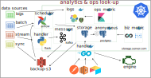

Data pipe proposal
Giovanni Marelli
2020/09/19
principles for a data pipeline
- modular: each component should be maintained and developed independently
- monitored: we know what breaks and why
- historical consistency: ability to perform consistent analytics on past data
- quality assurance: we know when a KPI deteriorates and which days to exclude from analytics
- alerts: we get promptly informed when something goes wrong
- control panel: on the jobs running, ability to re-run and re-schedule
- analytics platform: parse and display the relevant metrics
- privacy layer: compliance and safe analytics
where do we stand?
- code: monolithic like code, no object oriented, one main contributor left, documentation missing
- ops: we have few dockers, no orchestration
- repo: the repository contains operations, monitoring, storage management, reporting… few libraries
- storage: we have a postgres, sqlite files, tool’s own database (sent emails)
- data amount: we are still not handling big data, good chance for redundancy
existing data sources
Documented in notion
- postgres: email traffic and some metrics
- SQLite:
- bounces bounced email addresses
- l3m table to populate the main UI
- logtracker populates the control center
- sent emails: roundcube email server
- CRM: pipedrive to connect
- spreadsheets: different business critical spreadsheets not connected
requirements
- integrate external platforms: easy way to include external platforms in the loop
- warming metrics: store and display warming metrics per client
- operational monitoring: logtrace to extend
- delivery funnel: complains and spam are missing
- spreadsheets: link the existing spreadsheets to databases -> airtable
- centralized db: store most of the information in a central place
- visualization: internal (external?) dashboard
- l3m: migration of the UI
design

data pipeline
operation workflow/funnel

ops workflow
preliminaries
- data modeling: how do we structure the data considering futuristic changes, what should stay relational
- metadata: which information we need to store
- naming convention: I would avoid
rcptasrecipient,topmx… which we struggle to understand. - entity relationship: Decide the
idnaming and how we join tables - access control list: which access group should we create and what permissions do we need to grant (security, stability, traceability)
- entity relationship management: which IDs will connect all the tables, what we identify as unity (clients, campaigns, platform, transport…)
- operational metrics: what are the fundamental metrics to consider
- business metrics: what are the business goals to monitor
road-map
- cluster: build the cluster, prepare the containers and link them
- central db: set up a central db (digital ocean?) and create an API
- platform integration: ad-hoc ETL, lambda, postman
- replace routines: decouple from the monolith to single services
- refining requirements: metrics, data structure, touchpoints
- API building: document with swagger